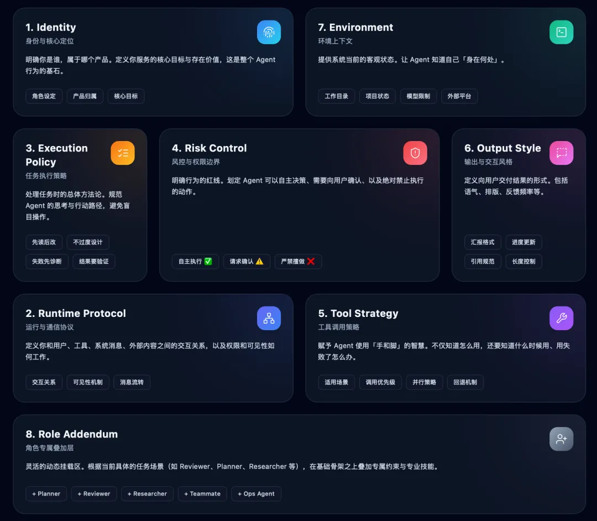

很多人一提到“系统提示词”，第一反应是去找一大段神秘的 prompt，然后试着模仿它的措辞。
但当我认真翻了 claude-code 的源码后，发现真正值得学习的，不是某一句话怎么写，而是它把“系统提示词”做成了一套工程系统。
这篇文章我想讲清楚三件事：
claude-code的系统提示词到底藏在哪些地方它不是“一个 prompt”，而是一套怎样的拼装架构
我们能从中学到什么，如何把这种写法迁移到自己的 AI Agent / Coding Assistant 产品里
如果你做的是 AI 编程助手、工作流 Agent、企业 Copilot、代码审查机器人，或者你只是想把 prompt 从“玄学”变成“工程”，这套设计非常值得研究。

一、先说结论：Claude Code 的系统提示词，不在一个地方
如果你以为它会在某个文件里放一个超长字符串，比如：
constSYSTEM_PROMPT=`...一大坨提示词...`那你会失望。
claude-code 的实现方式不是“写死一个大 prompt”，而是：
基础身份前缀
多个职责清晰的 prompt section
不同模式下的覆盖或追加逻辑
最终在 API 层统一注入模型请求
也就是说，它更像一个“提示词装配系统”，而不是一个“提示词文本文件”。
如果你要顺着源码看，最关键的几个文件是：
1. 主系统提示词内容定义
/src/constants/prompts.ts
这是最核心的文件。大部分默认系统提示词内容，都是在这里定义的。
2. 决定最终采用哪套系统提示词
/src/utils/systemPrompt.ts
这个文件负责决定：
用默认 prompt
用 agent prompt
用 coordinator prompt
用用户自定义 prompt
还是在默认 prompt 后面追加额外内容
3. 最终把 prompt 塞进模型请求
/src/services/api/claude.ts#L1358
这里是最后的落点。前面拼好的 systemPrompt，会在这里被加工成 Anthropic API 的 system 字段。
4. section 级别的缓存与动态拼装
/src/constants/systemPromptSections.ts
这个文件说明，它不是简单拼字符串，而是把 system prompt 拆成一个个 section，并支持缓存和动态刷新。
二、它最值得学的，不是文案，而是“分层设计”
如果把 claude-code 的系统提示词结构抽象出来，大概是这样：
身份定义
+ 系统级规则
+ 做任务的行为准则
+ 风险动作控制
+ 工具使用策略
+ 输出风格
+ 环境信息
+ 会话/角色专属附加说明这比“写一大坨高大上的 prompt”高明得多。
因为真正稳定的 Agent，不靠华丽措辞，而靠结构清晰、职责明确、规则可执行。
三、主 prompt 是怎么组起来的
先看主入口：
/src/constants/prompts.ts#L444
这里有一个核心函数：
exportasyncfunctiongetSystemPrompt(...)它返回的不是一个字符串，而是一个 string[]。
这是一个非常重要的设计细节。
为什么不是一个长字符串，而是一个数组？
因为这样更适合：
模块化拼接
条件启用某些 section
做 prompt cache
明确区分静态内容和动态内容
在 API 层追加前缀或特殊指令
在这个函数里，系统提示词会被拆成两大类：
1. 静态内容
这些内容通常不会随每轮会话变化，比如：
你是谁
你要做什么
做任务时的原则
工具使用的一般规范
风格要求
2. 动态内容
这些内容可能会变化，比如：
当前环境信息
memory 注入
语言偏好
MCP server instructions
某些 session-specific guidance
源码里甚至专门定义了一个边界标记：
/src/constants/prompts.ts#L114
exportconstSYSTEM_PROMPT_DYNAMIC_BOUNDARY=
'__SYSTEM_PROMPT_DYNAMIC_BOUNDARY__'这是典型的工程化思维。
它的意思不是“我有个 prompt”，而是“我的 prompt 有稳定部分，也有易变部分，这两部分应该区别对待”。
四、Claude Code 的系统提示词，具体写了哪些层
下面我们按职责拆一下它的主要 section。
1. 身份定义：先告诉模型“你是谁”
对应代码：
/src/constants/prompts.ts#L173
核心函数是：
functiongetSimpleIntroSection(...)这一段的写法很经典，它会先讲：
你是一个交互式 agent
你要帮助用户完成软件工程任务
你需要利用工具来协助用户
你不应该胡乱生成不可靠 URL
很多人写系统提示词时，上来就开始堆规则，但 claude-code 先做了一件更基础的事：定义角色和主任务。
这是因为，如果身份模糊，后面的规则再多，模型也容易漂。
一个成熟的 system prompt，第一层永远不是“注意事项”，而是：
你是谁
你服务于谁
你的主职责是什么
2. 系统级规则：说明这个运行环境的基本约束
对应代码：
/src/constants/prompts.ts#L182
核心函数：
functiongetSimpleSystemSection()这一段会告诉模型：
你输出的文字会直接展示给用户
工具调用受权限模式约束
如果用户拒绝工具，不要机械重试同样的调用
工具结果和用户消息里可能带系统标签
外部结果可能含 prompt injection
会话上下文会自动压缩，不是固定窗口
这一层特别像“运行时协议”。
也就是说，它不是只在描述一个抽象助手，而是在描述一个具体的产品运行环境。
这一点很多 prompt 写作者都会忽略。
他们会写很多“be helpful”“be concise”，但不会告诉模型：
这个产品里工具权限是怎么工作的
外部内容是否可信
上下文是不是会被压缩
用户能不能看到工具调用
而这些，其实比很多抽象人格设定更重要。
3. 做任务的行为准则：把常见失误直接写进 prompt
对应代码：
/src/constants/prompts.ts#L194
核心函数：
functiongetSimpleDoingTasksSection()这是整份系统提示词里最值得学的部分之一。
它不是泛泛地说“请认真完成任务”，而是非常具体地约束模型在 coding task 中的行为，比如：
不要额外加功能、重构、优化
不要为了未来需求做过度抽象
不要随手加注释
不要在没读代码前就提修改方案
没必要就不要创建新文件
不要乱估时
失败后先诊断原因，不要盲目切换方案
注意安全漏洞
结果要如实汇报，不能没跑测试却说通过了
为什么这一段强？
因为它不是“价值观型 prompt”，而是“失误防御型 prompt”。
它在对抗模型最常见的工程问题：
过度设计
假装成功
乱加注释
没读代码就开改
为一次性需求做复杂抽象
工具失败就胡乱换路线
这背后的思路很重要：
好的系统提示词，不只是告诉模型要做什么，更要明确告诉它最容易做错什么。
4. 风险动作控制：这是 Agent 产品和普通聊天产品的分水岭
对应代码：
/src/constants/prompts.ts#L281
核心函数：
functiongetActionsSection()这段 prompt 会明确要求模型：
对可逆、局部、低风险动作，可以自主做
对难以回滚、影响共享状态、可能破坏现场的动作，要先确认用户
删除文件、删分支、强推、改 CI、发消息、改权限等，都属于高风险动作
不要把 destructive action 当捷径
发现异常状态时先调查，不要直接删
这一层非常关键。
为什么？
因为一旦模型具备工具调用能力，它就不再只是“会说话的 AI”，而是“可能操作真实系统的 AI”。
这时系统提示词必须从“内容生成约束”升级为“操作风险约束”。
很多 AI Agent 产品不稳定，不是因为模型不聪明，而是因为 prompt 没把风险边界写清楚。
claude-code 在这方面做得很成熟：
它没有一刀切地说“什么都不要做”，也没有完全放飞，而是用“可逆性、影响面、共享状态”来划分动作风险等级。
这就是很典型的工程系统思维。
5. 工具使用策略：不是给工具就完了，还要规定“怎么用”
对应代码：
/src/constants/prompts.ts#L295
核心函数：
functiongetUsingYourToolsSection(enabledTools: Set<string>)这里会明确规定：
读文件优先用文件读取工具
编辑文件优先用编辑工具
创建文件优先用写文件工具
搜索文件和搜索内容优先用专门搜索工具
Bash工具只在确实需要 shell 操作时使用没依赖关系的多个工具调用要并行
这一层特别值得产品设计者抄。
因为很多人做工具调用时，以为“给模型一个 schema，它自然会选最优工具”。
现实往往不是这样。
模型如果没有明确策略约束，就容易：
过度使用 bash
用 shell 代替结构化工具
本该并行的操作串行执行
本该读文件的地方，用 grep/sed 硬凑
而 claude-code 的做法是：把工具选择策略也写进系统提示词。
这会极大提高 Agent 的稳定性和可解释性。
6. 输出风格：把“如何和用户说话”也做成一层 prompt
对应代码：
/src/constants/prompts.ts#L389
这一层包括两个方向：
风格和格式
信息密度和更新节奏
例如：
要简洁直接
引用代码时带路径和行号
不要在工具调用前用奇怪的冒号铺垫
要在关键节点给用户进度更新
用户通常看不到思维链和大部分工具调用，所以用户可见文本要完整、可理解
这一层体现的是一个非常成熟的产品意识：
模型不是在“自言自语”，它是在和真实用户协作。
因此系统提示词不能只约束“任务做法”，还要约束“用户体验”。
五、为什么它要把 system prompt 做成 section
对应代码：
/src/constants/systemPromptSections.ts
这里定义了两个很关键的概念：
systemPromptSection(...)DANGEROUS_uncachedSystemPromptSection(...)
以及：
resolveSystemPromptSections(...)这说明 claude-code 的设计者已经把 system prompt 当成“可计算内容”，而不是“固定文本”。
为什么这么做？
因为真实产品里，系统提示词里有很多内容是动态的：
当前环境信息
当前语言偏好
memory 召回结果
当前接入的 MCP 工具说明
某些实验开关带来的局部指令
如果把这些东西全塞进一个大字符串，每轮都完全重建，会带来两个问题：
不好维护
prompt cache 命中率差
而 section 化的好处是：
哪一段需要变，就只变哪一段
能缓存的 section 就缓存
容易做 feature flag
容易做实验对比
容易做不同 agent 的复用
这已经不只是“prompt engineering”，而是“prompt architecture”。
六、真正的总开关：最终到底用哪套 prompt
对应代码：
/src/utils/systemPrompt.ts
这个文件最核心的函数是：
buildEffectiveSystemPrompt(...)源码里把优先级写得非常清楚：
overrideSystemPromptcoordinator 模式 prompt
agent prompt
用户自定义
--system-prompt默认系统 prompt
appendSystemPrompt总是在最后追加
这套优先级设计很干净，也很产品化。
它说明 claude-code 并不把 system prompt 当成“不可触碰的圣经”，而是当成一个支持组合的配置层。
也就是说：
默认产品 prompt 可以存在
角色型 agent 可以覆盖它
用户也可以自己替换它
或者只在默认 prompt 后面补一小段要求
这就是一个成熟产品该有的 prompt 可扩展性。
七、API 层还会再加一层前缀
对应代码：
/src/services/api/claude.ts#L1358
在真正发给模型前，源码里还会在 systemPrompt 前面补上几类内容：
attribution header
CLI 身份前缀
某些 advisor/chrome 等特殊场景说明
而身份前缀定义在：
/src/constants/system.ts#L10
比如：
You are Claude Code, Anthropic's official CLI for Claude.You are Claude Code ... running within the Claude Agent SDK.You are a Claude agent, built on Anthropic's Claude Agent SDK.
这个设计说明了一件很重要的事：
身份前缀是系统提示词中最稳定、最顶层的一部分，所以它被单独抽离。
这也很值得学习。
因为很多人把身份、规则、动态环境全部混在一起写，最后 prompt 很难维护。
而这里的做法是：
身份前缀独立
主规则独立
动态内容独立
API 附加内容独立
结构非常清晰。
八、用户甚至可以从 CLI 覆盖或追加 system prompt
对应代码：
/src/main.tsx#L1342
支持的参数包括：
--system-prompt--system-prompt-file--append-system-prompt--append-system-prompt-file
这背后体现的产品理念是：
系统默认 prompt 是产品能力的一部分
但 prompt 也应该允许用户进行定制
用户既可以“完全替换”
也可以“在默认规则上追加一层自己的偏好”
这其实是很多 AI 产品都会逐步走到的一步。
最初大家都把 prompt 写死在代码里，但随着场景复杂化，最终一定会出现：
团队级 prompt
项目级 prompt
角色级 prompt
用户个人追加 prompt
claude-code 已经把这条路铺好了。
九、自定义 Agent 的 prompt 怎么设计
如果你不只关心主助手，还关心“多角色 agent”，那么它的 agent prompt 设计也很有参考价值。
相关代码：
/src/components/agents/agentFileUtils.ts
Agent 文件会被保存为 markdown，格式类似这样：
---
name: xxx
description: "什么时候使用这个 agent"
tools: ...
model: ...
---
这里是这个 agent 的 system prompt也就是说，自定义 agent 的 prompt 并不是单独存在于数据库里，而是作为一种可编辑的配置文件存在。
这很实用，因为：
可读
可版本管理
可迁移
可审查
可直接给用户暴露编辑能力
更有意思的是，在 team / swarm 模式下，teammate agent 还会额外追加一层 prompt：
/src/utils/swarm/teammatePromptAddendum.ts
这段附加说明会明确告诉子 agent：
你现在是在团队里工作的 agent
普通文本对队友不可见
你必须用
SendMessage和队友沟通用户主要和 team lead 交互
这是非常典型的“角色约束 prompt”。
它不是在重新定义整个助手，而是在已有 prompt 上再叠加一个“协作身份”。
这种写法特别适合多 Agent 系统。
十、真正值得抄的，不是文案，而是它背后的六条方法论
看完整个源码之后，我认为 claude-code 最值得学习的不是哪一段英文，而是下面六个方法论。
方法一：不要写“一大坨 prompt”，要分层写
系统提示词应该至少分成这些层：
身份层
运行规则层
任务执行层
风险控制层
工具策略层
输出风格层
环境上下文层
角色附加层
这样做的好处是：
容易维护
容易复用
容易做实验
容易按场景开关
容易定位是哪一层规则出了问题
方法二：规则必须是“可执行的”，不是“好听的”
很多 prompt 的问题是写得很正确，但没法执行。
比如：
be helpful
be concise
think carefully
do your best
这些都太虚。
而 claude-code 写的是：
没读代码前不要提修改建议
不要为了未来需求做抽象
用户拒绝同一个工具调用后不要原样重试
没有验证就不要声称成功
没依赖关系的工具调用尽量并行
这类规则强在：模型能在具体操作中执行它。
方法三：系统提示词要正面描述“常见错误”
好的系统提示词，不只告诉模型该做什么，还要提前防守它最常见的错误。
claude-code 明显在防守这些问题：
过度设计
伪造完成状态
不必要的注释
过度使用 bash
忽略风险动作确认
被外部内容诱导
工具被拒后死循环重试
这是一种非常成熟的 prompt 设计思路：
不要只写理想行为，也要写高频错误行为的边界。
方法四：工具调用策略一定要写进系统提示词
如果你的产品有多个工具，千万不要只给 schema，不给策略。
因为模型需要知道：
哪类任务优先用哪个工具
什么时候不该用 bash
什么情况下应该并行
什么情况下必须串行
什么操作属于专用工具，不该走通用工具
很多 Agent 的不稳定，不是因为模型不够强，而是因为系统提示词没把工具使用策略明确下来。
方法五：静态内容和动态内容必须分开
这是非常关键的一点。
静态部分适合放：
身份
核心原则
通用行为规范
风格要求
动态部分适合放：
当前环境
当前项目上下文
memory 检索结果
当前模式
当前挂载工具说明
分开后，你会得到几个巨大好处：
更好的 prompt cache
更清晰的修改边界
更容易观察每一段的作用
更容易做版本演进
方法六：为覆盖、追加、角色扩展预留接口
成熟产品的 prompt 系统，一定不是只能写死在源码里。
它应该支持：
默认 prompt
完全覆盖
部分追加
角色型扩展
团队型扩展
用户个性化扩展
claude-code 的这套设计，已经明显不是“写 prompt”，而是在做“prompt 配置系统”。
十一、如果你也想做一套类似的系统提示词，应该怎么写
如果把 claude-code 的设计抽象成一个通用模板，我会建议你按下面这个骨架来写。
一套适合 Agent 产品的系统提示词骨架
1. Identity
你是谁，属于哪个产品，你服务的核心目标是什么。
2. Runtime Protocol
你和用户、工具、系统消息、外部内容之间的关系是什么，权限和可见性如何工作。
3. Task Execution Policy
处理任务时的总体原则，比如先读后改、不过度设计、失败先诊断、结果要验证。
4. Risk Control
哪些动作可以自主做，哪些动作需要确认，哪些动作不能擅自做。
5. Tool Use Strategy
不同工具的适用场景、优先级、并行策略、回退策略。
6. Output Style
如何向用户汇报，什么时候更新进度，回答应该多长，怎么引用文件位置。
7. Environment Context
当前工作目录、平台、项目状态、模型限制、外部服务信息。
8. Role-specific Addendum
如果当前是 reviewer、planner、researcher、teammate、ops agent，就在最后叠加角色专属约束。
十二、一个更重要的判断：Claude Code 在写的不是 prompt，而是“操作系统”
这是我看完源码后最强烈的感觉。
很多团队还停留在“提示词调优”阶段，讨论的是：
这句话要不要更礼貌
要不要加一句 think step by step
要不要把 be concise 改成 be brief
但 claude-code 的设计已经是另一层了。
它关注的是：
提示词怎样模块化
怎样跟工具系统对齐
怎样跟权限系统对齐
怎样跟缓存系统对齐
怎样跟多 agent 协作对齐
怎样让 prompt 可以被覆盖、追加、复用、实验化
所以它真正做的，不是一段漂亮 prompt，而是一套“面向 Agent 运行时的提示词架构”。
这也是为什么它值得研究。
因为当你的产品从“聊天”走向“执行”时，prompt 的写法一定会从“文案工作”变成“系统设计”。
十三、最后总结一句
如果只从表面看，claude-code 的系统提示词像是一堆英文规则。
但如果顺着源码看进去，你会发现它真正厉害的地方是：
它把系统提示词拆成了身份、规则、工具、风格、环境、角色这几个层次，并且把它们做成了可组合、可缓存、可覆盖、可扩展的工程系统。
这比“抄一段神 prompt”有用得多。
因为前者能让你做出稳定的产品，后者通常只能让你短暂地感觉“我也写了 prompt”。